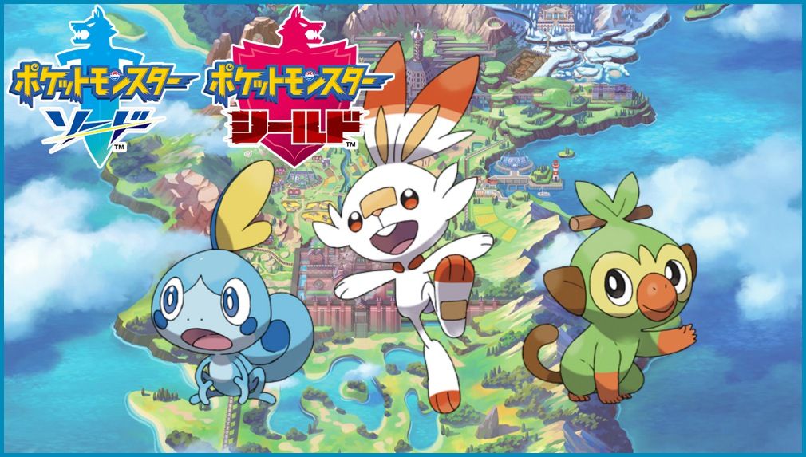

ポケットモンスター剣盾

・基礎情報
株式会社ポケモンより2019年11月15日に発売されたNintendo Switch用ロールプレイングゲーム『ポケットモンスター ソード』と『ポケットモンスター シールド』の総称。ポケットモンスターシリーズ完全新作の8作目。公式の略称は「ポケモン剣盾」。
・新コンテンツ
ダイマックスとキョダイマックス
ガラル地方で見られるポケモンの巨大化現象「ダイマックス」をポケモンバトルに応用したシステム。巨大化すれば能力も向上する上、タイプによって異なるダイマックスわざを使用することができる。
ダイマックスは特定の場所であれば全てのポケモンが可能である。更に特別なポケモンのみキョダイマックスとなり、こちらは姿形も変化し、そのポケモン専用のダイマックスわざを使用できる。
(wikipedia参照)
公式サイト
攻略サイトは,こちら
タイプ相性表